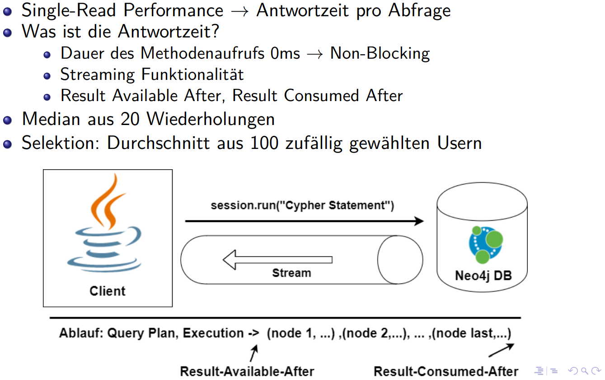

MATCH ( u : User {last: "Doe" }) RETURN u ;Graphdatenbank Neo4j
Über mich
Code und Slides auf Github:
https://github.com/goldschmiede/2019-11-15-Graphdatenbank-neo4j
Twitter: @mjohenneken
max.johenneken@anderscore.com
Fragen bitte behalten oder aufschreiben und am Ende stellen!
Motivation
Veranstaltung "Schemalose Datenbanken"
Benchmarking von 7 Graphdatenbanken
Ausarbeitung & Performance Testing
Performance vergleich
Erfüllen die Datenbanken was sie versprchen ? Wo gibt es Unterschiede?
Warum macht man das eigentlich so und nicht anders? Einblick in Konzeption Modellierung von Datenbanken.

Befrag die Daten
Welche Produkte kaufen Leute die dieses Produkt gekauft haben?
Befrag die Daten
Wie viele Bekannte 3. Grades habe ich?
Befrag die Daten
Hat meine Microservice-Architektur zyklische Abhängigkeiten, die zu einem Deadlock führen könnten?
Befrag die Daten
Klar! Man braucht Daten! Doch wie halte ich sie vor?
Anforderung an ein DBMS
Speichern, Bearbeiten, Löschen von Daten
Konsistenz und Integrität der Daten
Dauerhafte Speicherung
Effizienter Zugriff
Effiziente Speichernutzung
Mehrbenutzerbetrieb
Zugriffsberechtigungen
Wir haben doch Relationale Datenbanken die sich über Jahrzehnte bewährt haben? Geht doch!
Nutzungsmuster
Die Technologie sollte das Nutzungsmuster optimal unterstützen
Bankkonto verwalten, Reise buchen
→ Integrität, Transaktionen, Gemischte Lese/Schreibzugriffe
Session verwalten
→ Hohe Verfügbarkeit, gemischte Lese/Schreibzugriffe, simple Struktur
Web Forum
→ Viele Lesezugriffe, wenig Schreibzugriffe, Hohe Verfügbarkeit
Sensor Logging, Application Logs
→ Viele Schreibzugriffe, keine Relationen, Historie relevant
Produktempfehlungen
→Relationen wichtig, Lese/Schreibzugriffe
Daten haben komplexe Beziehungen
rund: Objekte, eckig: Attribute
Wie speichere ich so etwas in einem (sequentiellen) Speicher ab? Das "Wie?" entscheidet über den Einsatz der Technologie
Datenbankkonzepte
Bankkonto verwalten, Reise buchen
→ Relationale Datenbanken
Session Verwalten
→ Key/Value Store
Web Forum
→ Relationale Datenbanken, Document Stores
Sensor Logging, Application Logs
→ Wide Colum Store, Time Series DB
Produktempfehlungen
→ Graph-Datenbanken
Graph Datenbanken Use-Cases
Real-Time Empfehlungssysteme
Betrugserkennung
graph-basierte Suche
Knowledge Graphs
Social Media Platformen
Source Code analysieren
Kategorisierung in Online Transactional Processing(OLTP) und Online Analytical Processing (OLAP) Eher für OLAP Anwendungsfälle geeignet.
Neo4J allgemein als Produkt, Alternative Graphdatenbanken nennen
schemafrei/-optional
implementiert in Java/Scala
ACID-Transaktionen
Datenmodell: Property Graph
Abfragesprache: Cypher
Alternativen:
Datastax Enterprise
OrientDB
ArangoDB
MariaDB OQGraph
PostgreSQL AgensGraph
horizontale Skalierung mit Neo4j
CAP Theorem und Konsistenz
(C) Konsistenz
(A) Availablity
(P) Partitionstoleranz
Für Neo4j gilt:
Eine Instanz → Immediate Consistency
Cluster Betrieb → BASE Basically Available Soft State Eventual Consistency
Cypher Language
Abfragesprache für Neo4j
deklarativ
Anfrage auf Property Graphen
MATCH - Struktur beschreiben
WHERE - Wie SQL
RETURN - Werte zurückgeben
CREATE, DELETE
LOAD CSV - Csv Dateien laden
Beispiele für Cypher
Alle geschäftlichen Kontakte bis Tiefe depth von User mit id:
Anbindung in Java
Driver driver = GraphDatabase.driver(
"bolt://localhost:7687", AuthTokens.basic("neo4j", "12345"));
Session session = driver.session();
Result result= session.run(
"MATCH ( u : User )
RETURN COUNT( u )
AS users ;");
session.close();
driver.close();Alternativ:
Neo4j-OGM, Anbindung an Spring Data
JDBC driver
Apache TinkerPop 3
REST API
Neo4j-OGM
Zusätzliche Features wie Einbetten in die Anwendung,
Neo4j als embedded DB
Trigger (Event Handler)
Serverseitige Scripts in Java
Neo4j Browser
Abfragen testen und analysieren
DB Verwaltung
Graphische und tabellarische und JSON Ausgabe,
Schemalos / Schema-optional?
kein Schema erforderlich
Constraints (unique, Existenz von Properties bei Knoten und Beziehungen)
schwächere Struktur → mehr Fallbehandlungen in der Application
Trend: Polyglot Persistence statt zentralen DB Servern und mehreren Anwendungen
Zuständigkeit Datenzugriff wird an die Anwendung abgegeben.
Datenmodell für den Benchmark
Modellierung von Graphdatenbanken
Best Practices:
Modellierng sollte von den gestellten Anfragen abhängig gemacht werden
Balance finden zwischen:
Jedes Attribut hat seinen eignen Knoten
Alle Attribute in einem Knoten speichern
keine BLOBs
Indexe
beschleunigen Lesezugriffe
verlangsamen Schreibzugriffe
belegen Speicher
eigene ID benutzen
Cypher Befehle analysieren
physische Struktur Graphdatenbank
Knoten durch feste größe direkt Addressierbar
Knoten 15Byte
ID, Labels, Erste Relation, Erster Property Block
Relation 31B
Typ, Startknoten, Zielknoten, Erster Property Block, nächste und vorherige Relation von Start- und Zielknoten
Property Block 41B
bis zu 4 Properties jeweils mit ID codierten/komprimierten Property-Wert, Pointer zu String oder Array
Datensätze
Datenimport
Messumgebung
Was wird gemessen ?

Selektion - Primärschlüssel
Selektion - Nichtschulüsselattribut

Aggregation - Anzahl aller Nutzer
Aggregation
Traversierung - Transitive Suche nach Kontakten eines Nutzers
Traversierung - Transitive Suche nach geschäftlichen Kontakten eines Nutzers
Traversierung - Transitive Suche nach ausländischen Kontakten eines Nutzers
Evaluation der Ergebnisse
gute Dokumentation
gute Visualisierung mittels Neo4j-Browser
intuitive Abfragesprache Cypher
Anbindung an Neo4j super einfach
positiver Eindruck von der Performance
non-blocking Java Api
Negativ anzumerken ist:
unuberlegte Cypher-Anfragen können Neo4j überfordern
nur eine DB pro Server
Abschluss & Demo
Vielen Dank!
Wo siehst du Anwendungsfälle? Probleme? Fragen?
Und jetzt geht’s ab in den Source-Code:
Praxisbeispiel: Source-Code-Struktur von SLF4j mit JQAssistant analysieren